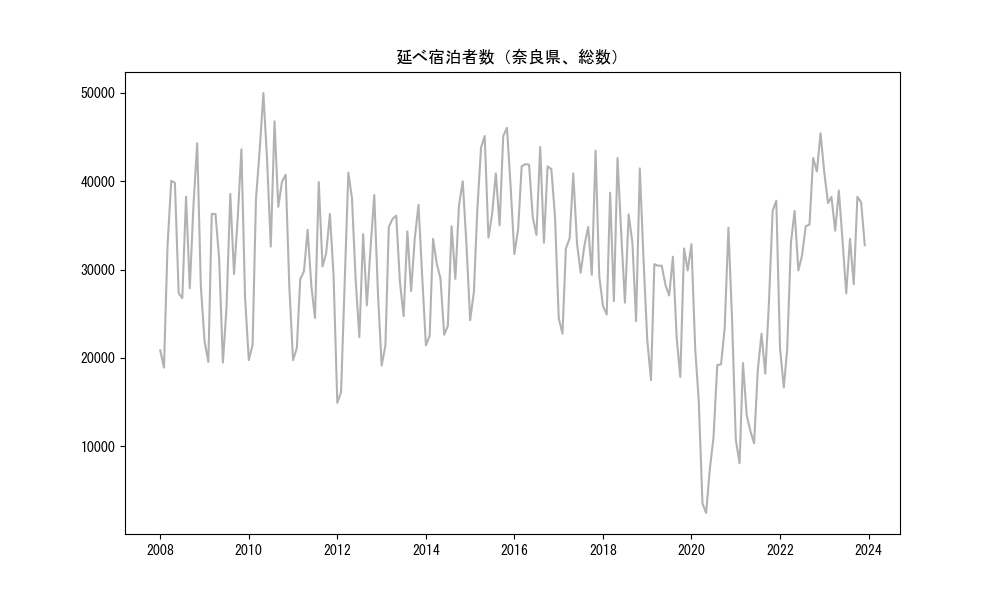
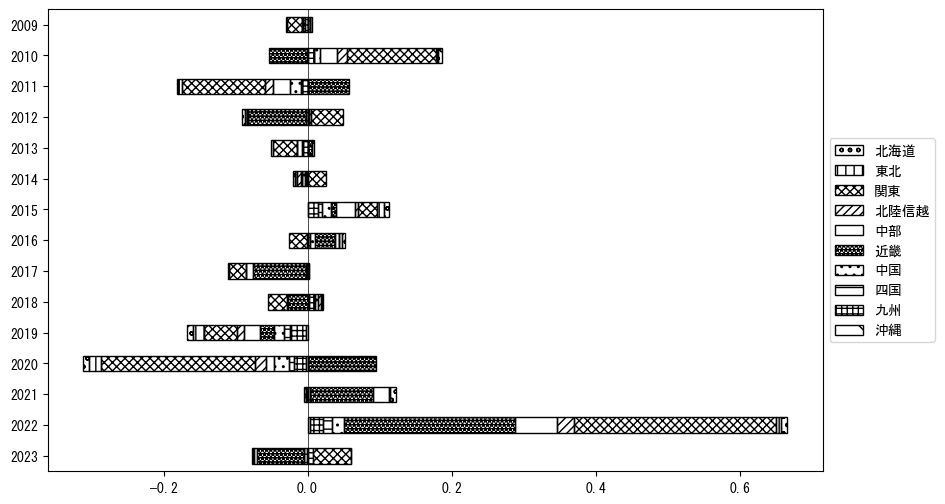

-
トップ
-
奈良県
奈良県
１．延べ宿泊者（総数）の推移
時系列グラフ

図１：奈良県内の従業員数100人以上の宿泊施設での延べ宿泊者数（国外、居住地不詳を含む総数）。
基本統計量
表１：従業員数100人以上の宿泊施設での延べ宿泊者の総数（国外、および居住地不詳を含む）に関する基本統計量。単位は人。平均は１か月あたりの平均値を表す。図１に対応。
| 2008年 |
31,845 |
8,092 |
18,897 (2月) |
44,299 (11月) |
| 2009年 |
30,388 |
7,906 |
19,461 (6月) |
43,620 (11月) |
| 2010年 |
36,698 |
9,509 |
19,762 (1月) |
49,988 (5月) |
| 2011年 |
29,539 |
5,864 |
19,737 (1月) |
39,902 (8月) |
| 2012年 |
28,966 |
8,380 |
14,912 (1月) |
40,983 (4月) |
| 2013年 |
30,215 |
6,075 |
19,118 (1月) |
37,328 (11月) |
| 2014年 |
29,784 |
6,213 |
21,414 (1月) |
40,005 (11月) |
| 2015年 |
37,810 |
7,015 |
24,260 (1月) |
46,041 (11月) |
| 2016年 |
38,136 |
4,306 |
31,753 (1月) |
43,885 (8月) |
| 2017年 |
32,196 |
5,906 |
22,736 (2月) |
43,473 (11月) |
| 2018年 |
32,079 |
6,630 |
24,158 (10月) |
42,622 (5月) |
| 2019年 |
26,688 |
5,348 |
17,486 (2月) |
32,386 (11月) |
| 2020年 |
17,864 |
10,451 |
2,442 (5月) |
34,741 (11月) |
| 2021年 |
19,487 |
9,883 |
8,073 (2月) |
37,786 (12月) |
| 2022年 |
32,422 |
9,024 |
16,654 (2月) |
45,430 (12月) |
| 2023年 |
35,085 |
4,264 |
27,303 (7月) |
40,985 (1月) |
２．宿泊者数の重心（年平均の推移）
図２：奈良県内の従業員数100人以上の宿泊施設での宿泊者数（国外、居住地不詳を除く）の重心（年平均の推移）。
全画面表示
重心の前年平均からの移動距離と方位、および緯度・経度
表２：重心の前年平均からの移動距離と方位、および緯度・経度。図２に対応。
| 2008年 |
— |
— |
35.3513 |
137.3679 |
| 2009年 |
西南西 |
4.5km |
35.3364 |
137.3216 |
| 2010年 |
東北東 |
32.4km |
35.4535 |
137.6478 |
| 2011年 |
西南西 |
23.8km |
35.3635 |
137.4100 |
| 2012年 |
東北東 |
21.0km |
35.4029 |
137.6363 |
| 2013年 |
西 |
6.0km |
35.3990 |
137.5702 |
| 2014年 |
東南東 |
6.5km |
35.3757 |
137.6363 |
| 2015年 |
西北西 |
9.1km |
35.4050 |
137.5425 |
| 2016年 |
西 |
10.2km |
35.4122 |
137.4309 |
| 2017年 |
北東 |
8.9km |
35.4627 |
137.5071 |
| 2018年 |
西北西 |
6.4km |
35.4791 |
137.4396 |
| 2019年 |
東南東 |
11.3km |
35.4432 |
137.5562 |
| 2020年 |
西南西 |
73.2km |
35.1466 |
136.8375 |
| 2021年 |
西北西 |
4.9km |
35.1695 |
136.7915 |
| 2022年 |
東北東 |
26.7km |
35.2414 |
137.0713 |
| 2023年 |
東北東 |
22.6km |
35.3091 |
137.3053 |
運輸局別延べ宿泊者数
時系列（年平均）
 図３：奈良県内の従業員数100人以上の宿泊施設での１か月あたり平均宿泊者数（国外、居住地不詳を除く）の運輸局別内訳。
図３：奈良県内の従業員数100人以上の宿泊施設での１か月あたり平均宿泊者数（国外、居住地不詳を除く）の運輸局別内訳。
寄与度（前年からの変化率に対する）

図４：奈良県内の従業員数100人以上の宿泊施設での運輸局別宿泊者数（国外、居住地不詳を除く）から求めた寄与度。
３．宿泊者数の重心（月別）
図５：奈良県内の従業員数100人以上の宿泊施設での宿泊者数（国外、居住地不詳を除く）の重心（月別）。観測期間は2008年1月から2023年12月まで。
全画面表示
全期間（2008年1月～2023年12月）の平均と月別平均の比較
表３：全期間の平均から月別平均までの移動距離と方位、および緯度・経度。図５に対応。
| 全期間 |
— |
— |
35.3594 |
137.3795 |
| 1月 |
西南西 |
26.1km |
35.2415 |
137.1310 |
| 2月 |
南西 |
21.3km |
35.2500 |
137.1869 |
| 3月 |
東北東 |
20.3km |
35.4195 |
137.5905 |
| 4月 |
東北東 |
23.1km |
35.4732 |
137.5920 |
| 5月 |
南南西 |
4.1km |
35.3234 |
137.3685 |
| 6月 |
南南西 |
7.8km |
35.3005 |
137.3333 |
| 7月 |
西南西 |
24.4km |
35.2595 |
137.1410 |
| 8月 |
南西 |
25.7km |
35.2199 |
137.1544 |
| 9月 |
西南西 |
10.1km |
35.3246 |
137.2766 |
| 10月 |
北北東 |
25.9km |
35.5794 |
137.4746 |
| 11月 |
東北東 |
45.5km |
35.5327 |
137.8341 |
| 12月 |
東北東 |
9.0km |
35.3892 |
137.4711 |
運輸局別延べ宿泊者数
月別平均（2008年1月～2023年12月）
 図６：奈良県内の従業員数100人以上の宿泊施設での宿泊者数（国外、居住地不詳を除く）の運輸局別内訳（月別）。
図６：奈良県内の従業員数100人以上の宿泊施設での宿泊者数（国外、居住地不詳を除く）の運輸局別内訳（月別）。
寄与度（全期間の平均から月別平均への変化率に対する）
 図７：奈良県内の従業員数100人以上の宿泊施設での運輸局別宿泊者数（国外、居住地不詳を除く）から求めた寄与度（月別）。
図７：奈良県内の従業員数100人以上の宿泊施設での運輸局別宿泊者数（国外、居住地不詳を除く）から求めた寄与度（月別）。
４．データのダウンロード
出典：観光庁「宿泊旅行統計調査」に収録された「施設所在地別、居住地別延べ宿泊者数（従業員数100人以上の施設）」
国土地理院「白地図（地理院タイル）」（図２と図５）